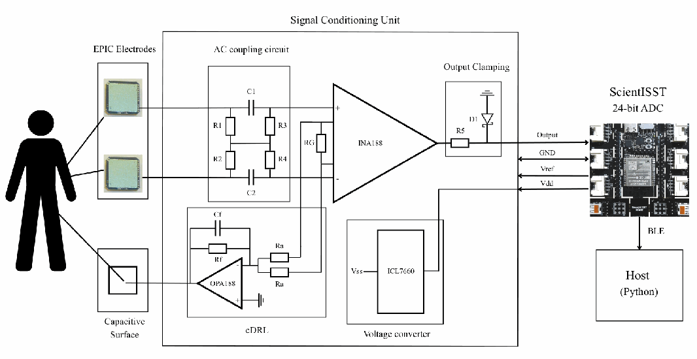
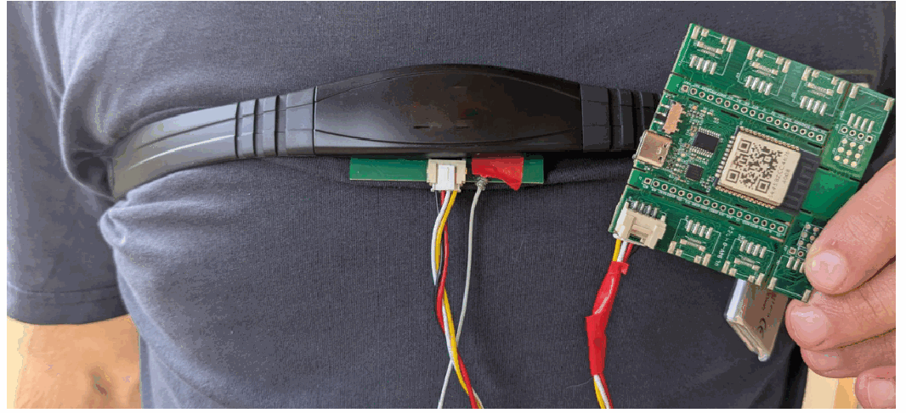
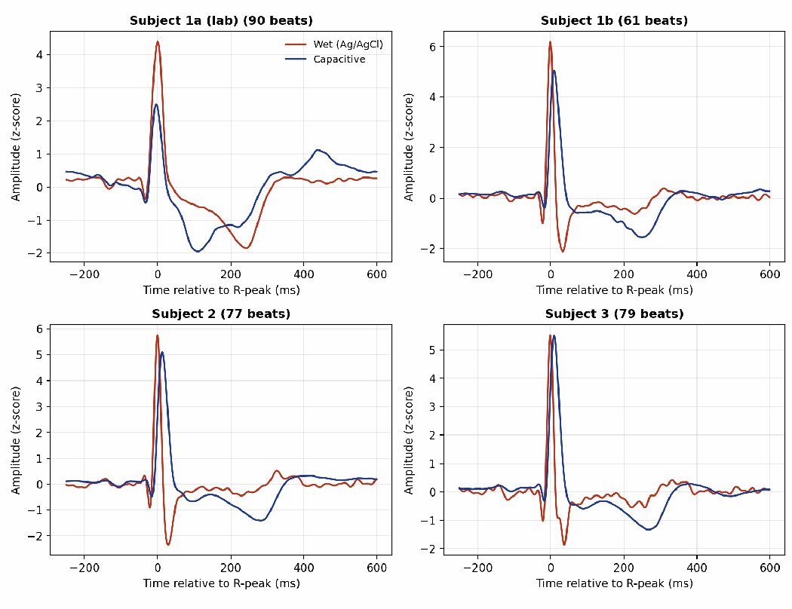

The problem
Capacitive ECG senses the heart’s electrical activity through an insulating layer, such as clothing, without conductive gel or skin preparation. That makes it attractive for less obtrusive monitoring, but the weak coupling leaves the signal vulnerable to power-line interference, unstable contact and motion.
My thesis explored a fully battery-powered system built from commercial components, targeting acquisition from a single limb. Wrist placement did not produce a recognisable ECG, so I evaluated the prototype in a chest-band configuration. The resulting study establishes what the system can recover reliably and where its limitations remain.
My contribution
I designed and tested the acquisition system, connecting analog front-end and PCB design with Python-based recording, filtering and signal-quality analysis. The work covered circuit simulation in TINA-TI, a two-layer PCB in KiCad, bench characterisation and on-body comparison with a simultaneous reference ECG.
The article is co-authored with Miguel Velhote Correia at INESC TEC and the Faculty of Engineering, University of Porto. I am its first author.
The acquisition system


Two Plessey EPIC PS25201B active capacitive electrodes feed a floating, symmetric AC-coupling network and an INA188 instrumentation amplifier. An OPA188-based capacitive driven-right-leg (cDRL) loop senses common-mode interference and feeds an inverted signal back to the body through a third capacitive surface.
The ScientISST board provides a 24-bit ADC and Bluetooth Low Energy streaming to a Python application for display and storage. A 3.3 V battery and an ICL7660 charge pump provide the bipolar supply, isolating the acquisition chain from mains. The custom PCB integrates the conditioning stages, supply circuit, sensor connections and board interface.
Simulation compared AC coupling and cDRL separately and together under 50 Hz interference, baseline wander and unequal electrode coupling. Combining both stages reduced interference while keeping the baseline stable. Bench measurements gave approximately 300× passband gain, with −3 dB corners near 0.2 Hz and 10 kHz.


On-body testing exposed saturation in the original feedback stage. Reducing cDRL gain from −2 to −0.2 while retaining an approximately 159 Hz loop bandwidth, together with a grounded metal enclosure around the PCB, restored linear operation. Chest-band electrodes were spaced 5 cm apart.
Evaluation & limitations
Four initial chest-band recordings covered galvanic and capacitive driven-leg feedback, on bare skin and through one cotton layer. All produced recognisable ECG and heart-rate estimates of 55–57.5 bpm. Template signal-to-noise ratio ranged from 19 to 30.5 dB; this metric measures beat-to-beat reproducibility. Contact quality varied, so these recordings demonstrate acquisition across conditions rather than a controlled comparison of their effects.
A separate simultaneous comparison against wet Ag/AgCl electrodes comprised four recordings across three subjects, with one subject contributing two recordings. Both channels were processed with a 0.5–40 Hz bandpass and a 50 Hz notch filter.
| Measure | Reported result |
|---|---|
| R-peak detection F1 | 0.97–1.00 |
| RR-interval bias | Within 2 ms of the reference |
| Waveform Pearson correlation | Approximately 0.6–0.7 |
| Template SNR | 10.5–15.0 dB; recording 1a was an outlier at 3.8 dB |


The prototype recovered beat timing and heart rate reliably in these recordings, but waveform shape agreed only moderately with the reference. S- and T-wave attenuation and a post-QRS negative excursion restrict the demonstrated use to rhythm and heart-rate monitoring. The study does not establish diagnostic morphology analysis, robust acquisition during motion or successful single-limb operation.
Future work includes unity-gain sensor buffers to improve headroom, flexible electrodes for more stable coupling on curved limbs, and revised AC coupling and adaptive filtering to address motion artefacts and waveform distortion.
Article
Godinho, B. & Correia, M. V. A Single-Limb, Fully Battery-Powered Capacitive ECG Acquisition System. First author.
Related master’s thesis: Contactless Sensing System for Health and Well-being Monitoring, University of Porto. IEEE-EMBS BSN, 2026, as listed in my CV.